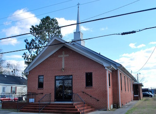

About

In the early 1900’s there was no official church building so Rev. Charles Perry held services at the home of Moses and Sylvania Budd. As the group grew, services were moved to Maude Kornegay Hall and the first service was held July of 1928 in Mount Olive, NC.
Under the leadership of the next pastor, Rev. Hazel Brownrigg, land was purchased with the help of Mrs. Mary D. Kornegay, Mr. Yancy Musgrave Sr. and friends of the church. The first church was built in 1932.
Later Rev. Adam Scott served for two years, followed by Rev. Raynor from Dunn, NC who also served for two years. Rev. H. Field served and later went on to become a Bishop. Rev. Adam Scott then returned for one year. The church was remodeled in 1945 with Rev. B.B. Dunn as pastor and he went on to serve for 5 years.
Rev. A. C. Yarborough was Gospel Light's next pastor. With Rev. Yarborough as pastor many committees were established and expanded, including the usher board, junior choir, and the junior Missionary Circle. Rev. Yarborough assigned presidents to his committees and would take the junior choir to sing with him everywhere. He was a great pastor. In 1956 the beloved Rev. Yarborough went home to be with the Lord.
Rev. W. R. Wallace, a man of God with deep concern about the church of God on a local, district, general, and international level, took over at a crucial time. Under Rev. Wallace many tasks and projects were accomplished including the church’s modern brick exterior, central heating/air conditioning, and adjoining fellowship hall. The church also purchased land for its parking lot. Rev. Wallace served the church for 35 years, stressing the importance of working together and trusting and believing in God.
In 1988 Gospel Light was blessed with a young Rev. Dwight Morrisey. Pastor Morrisey is still stressing the importance of working and trusting in the Lord. Under his leadership we have a new air conditioning, bus, van, computer, new doors and windows, and a driveway.
Gospel Light is home to a variety of ministers, deacons, mothers, and members. We are small in number, but we are large in the Lord.